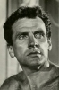

Also known as:Morte sospetta di una minorenne (original title)
Country:Italy, 100 minutes
Spoken languages:Italian
Genres:Crime, Action, Comedy, Thriller, Horror
Director(s):Sergio Martino
Writer(s):Sergio Martino, Ernesto Gastaldi
Video Codec:Unknown
Number: 918


Certification:
Storyline:
Police detective Paolo Germi and the mysterious Marisa meet each other at a dance hall. Germi is unsuspecting of the secret Marisa is carrying with her: adverse conditions forced her into prostitution. As Germi finds the young girl brutally murdered, he decides to go after her killers. During his investigation, he enters a world of intrigue and obfuscation that leave an endless trail of blood.
Cast: 


Medium: Bluray,
Comments: Part of: Giallo Essentials - White
Loaned: No
Aspect ratio: Unknown